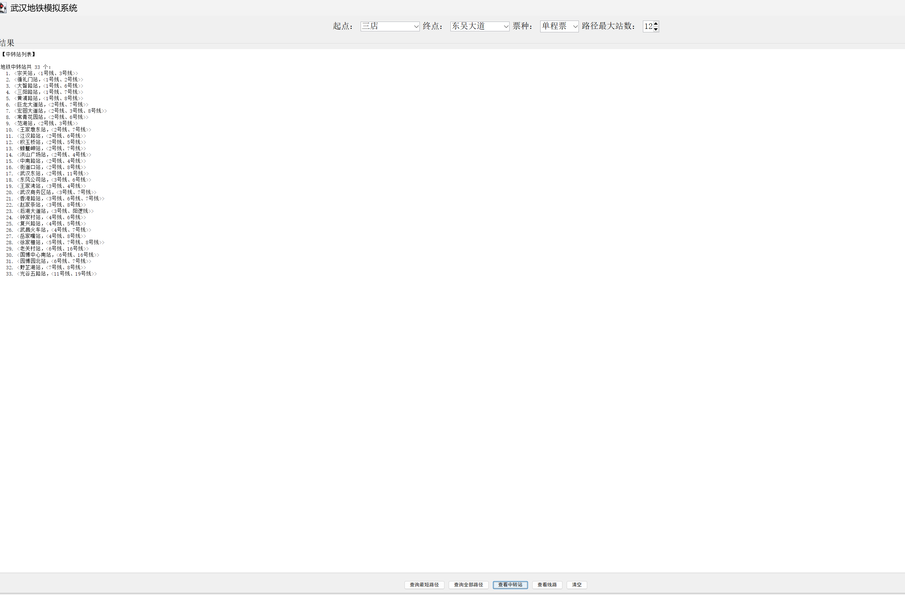
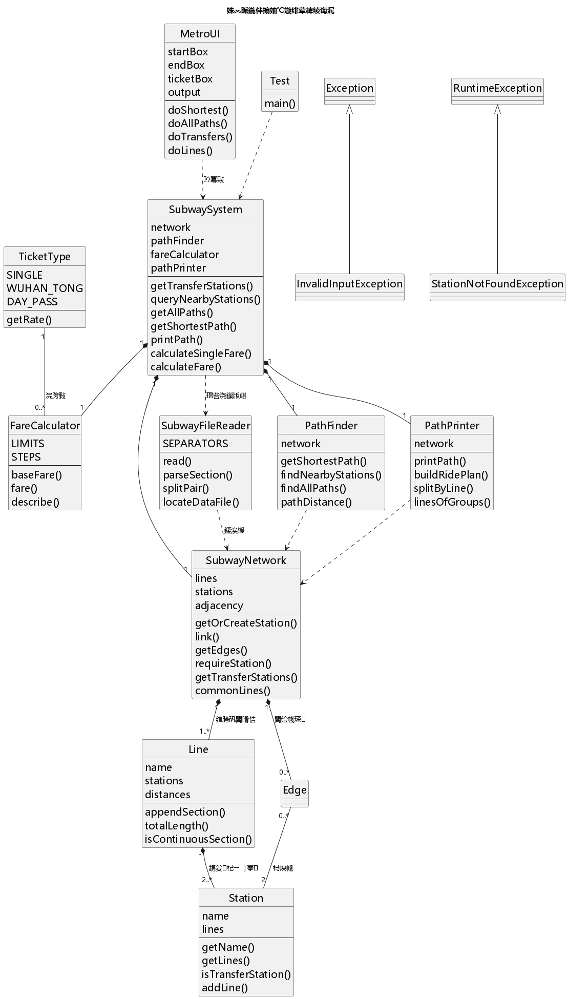
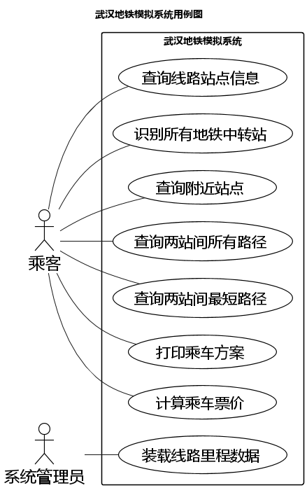

在校学生 · 正在学习 Java 与面向对象
你好，我是拉面粉
喜欢把课堂作业做成真正能跑起来的项目 —— 不只是交一份代码， 而是把需求、建模、实现、测试走一遍完整的流程。
01
关于我
目前在校学习计算机相关课程，主要精力放在 Java 与面向对象程序设计上。 我相信一句话：能跑起来的代码才是好代码 —— 所以每学一个新概念， 我都会想办法把它塞进一个可以运行的小程序里，而不是停在纸面上。
对 Web 前端与小程序也有兴趣，正在慢慢摸索。遇到问题习惯自己先查、先试、先拆开看， 实在卡住了再去问。
02
技术栈
03
代表项目
武汉地铁模拟系统
Java 8 · Swing · Dijkstra · 面向对象课程大作业
基于真实武汉地铁线网数据的查询系统。支持最短路径检索、全部无环路径枚举、 换乘方案生成与分段计价，并配有图形界面和完整的 UML 建模文档。
线路
12 条
站点
250 个
换乘站
33 个
核心类
14 个
- 最短路径：Dijkstra 优先队列实现，按实际里程加权
- 全部路径：DFS 回溯枚举无环路径，站点序列指纹去重
- 换乘方案：动态规划求换乘次数最少的线路组合
- 附近站点：Dijkstra 变体按真实距离筛选 n 公里内站点
- 分段计价：按里程阶梯计费，支持单程票 / 武汉通 / 日票
- 工程设计：三层结构分层解耦，界面层不含业务逻辑

04
UML 建模
动手写代码之前先把结构画清楚：谁负责数据、谁负责算法、谁负责输出。


05
最近在做
进行中
完善地铁模拟系统：优化图形界面的交互细节，补充更多边界情况的测试。
学习中
Web 前端：HTML / CSS / JavaScript 基础，计划做一个课程项目练手。
已完成
工程化实践：为项目配置 GitHub Actions，每次推送自动编译并运行回归测试。